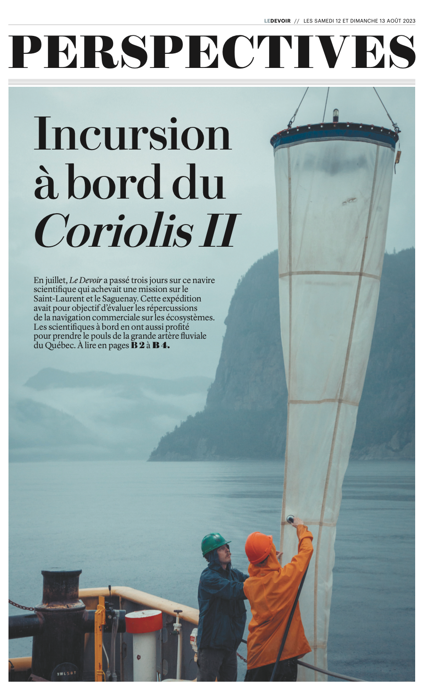
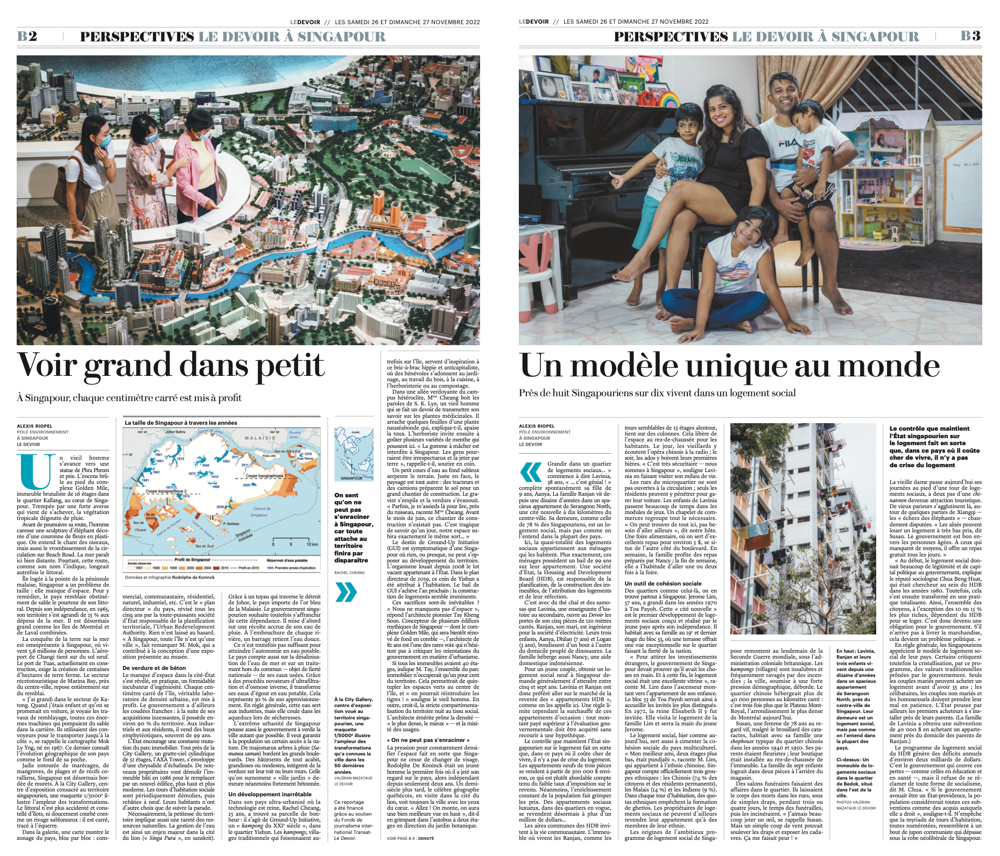
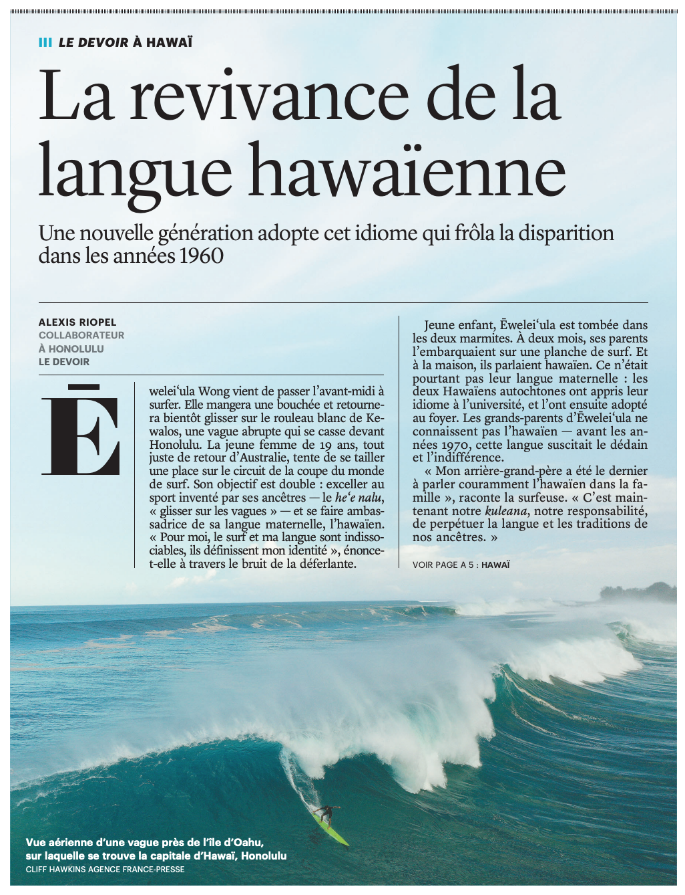
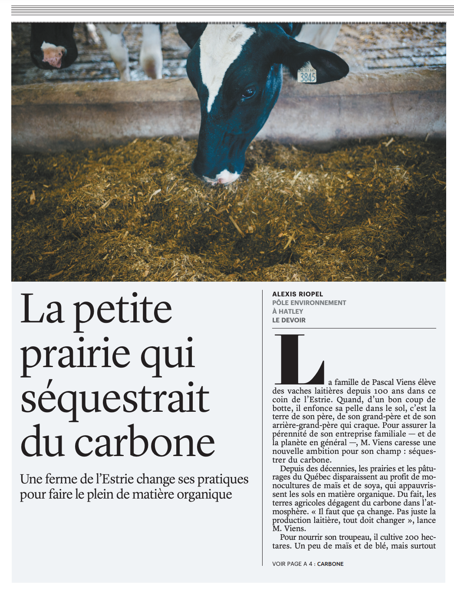
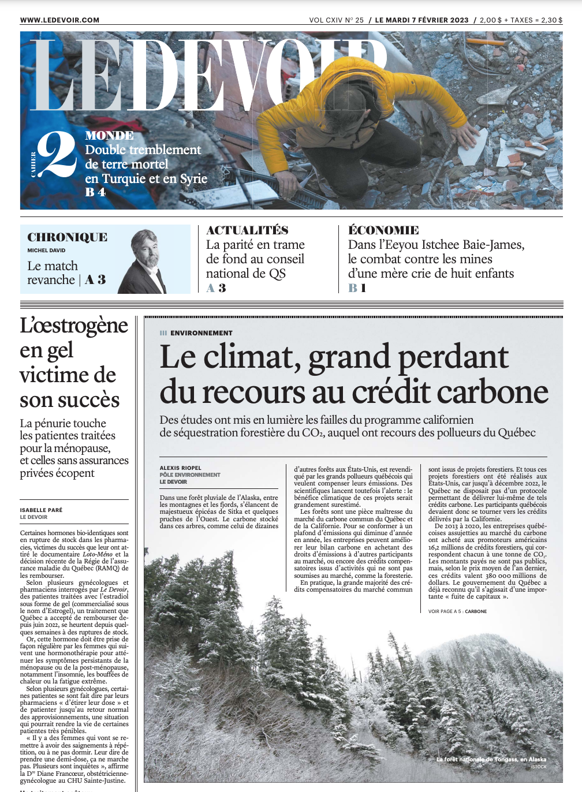
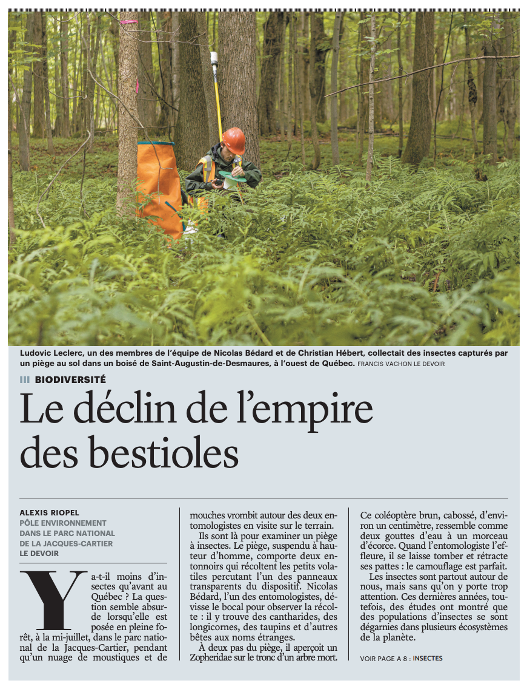
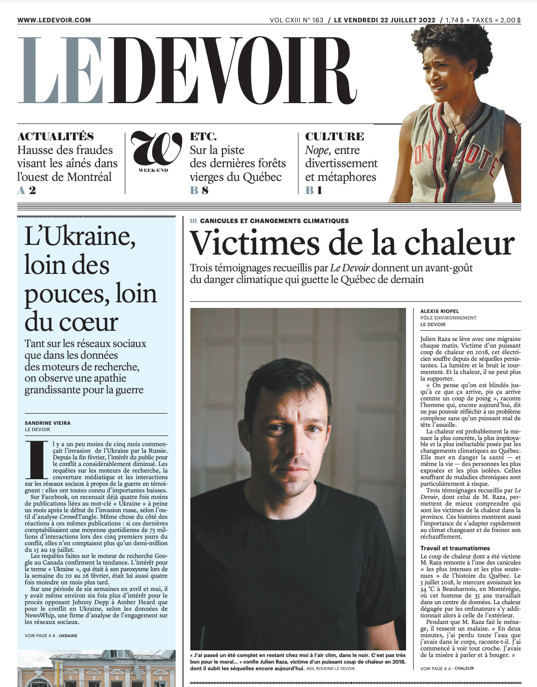
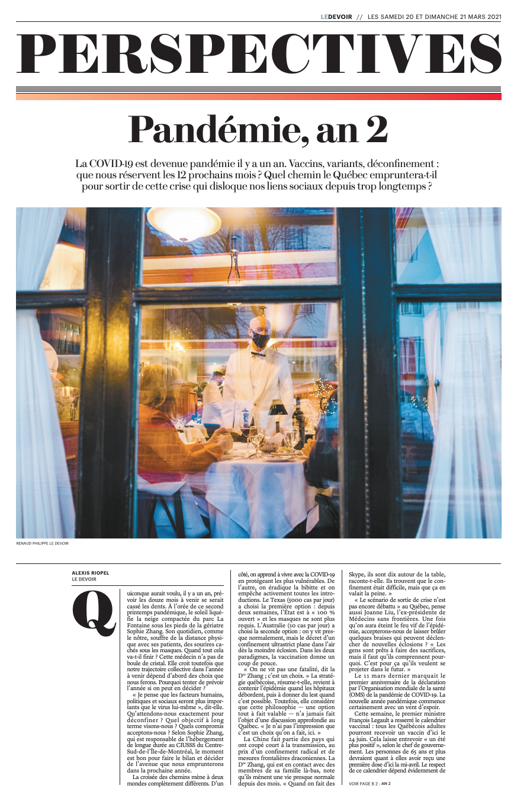

Alexis Riopel
riopelalexis [arobas] gmail.com
Mémoire de maîtrise
Curriculum vitæ
Portfolio
Le Devoir
Québec Science
Le Monde
Radio-Canada
Balados
Livres
Autres
Photos
Pérou, Bolivie et Chili
Nouvelle-Zélande
Odyssée Saint-Laurent

Le Devoir — 12 août 2023:
«Avant la suite du monde»
,
«Un portrait du Coriolis II»
,
«Les passagers du Coriolis II»

Le Devoir — novembre et décembre 2022:
«Voir grand dans petit»
,
«À Singapour, un modèle d'habitation sociale unique au monde»
,
«L'esprit de corps va-t-il se fissurer?»
,
etc.
,

Le Devoir — 12 juin 2024

Le Devoir — 12 août 2023

Le Devoir — 7 février 2023

Le Devoir — 27 juillet 2022

Le Devoir — 22 juillet 2022

Le Devoir — 20 mars 2021
Le Devoir — 29 février 2020
Le Devoir — 17 août 2019
Série pour Le Devoir —
16
,
18
,
19 février 2019